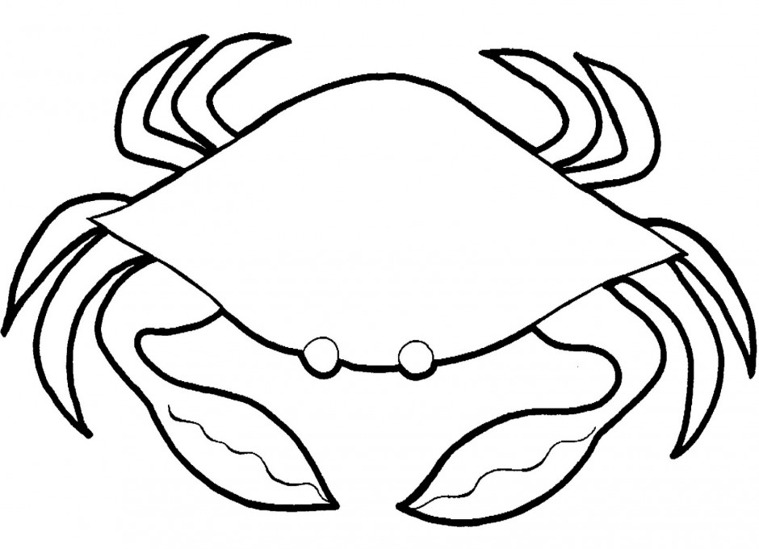

Every morning when I was young I would sit with my father at the livingroom table and read the New York Times. I had zero interest in the majority of the goings-ons in world politics, business, or arts, the only pages I wanted to read were the comics and the weather.
I liked looking at the country-wide systems, the arcing warm and cold fronts, the hatched shading showing the precipitation types from coast to coast. I liked looking at the predicted highs and lows for the major metro-areas, the stark contrasts between balmy winter days in Honolulu and incomprehensibly fridged nights in Bismark. Sunday's edition was my favorite, a full-page spread color coded to show the day's surface temperatures.
Clouds and Cloud Structures
Clouds and their attempted catagorization is the penultimate example of human beings desparately attempting to cram incredibly complex systems into neat finite boxes. This sociological phenomenon is well described in Lulu Miller's Why Fish Don't Exist: we (as humans) tend to associate everything that swims in water as "fish". Eels, sharks, tuna, boxfish, manta rays, salmon—all fish. While it's easy to justify this broad catagorization (all these creatures look similar-ish, all extract oxygen from water using gills, all live in similar areas), the genetic reality is much more complex. Despite looking like a "typical" fish, sharks are very closely related to manta rays, and both are distant distant distant cousins of classic fish like tuna. The issue of broad catagorization erasing lines of genetic distinction in favor of aesthetically pleasing order is even more egregious in the case of crabs. Carcinisation, the process of evolution to a crab-like form, has occurred entirely independently at least 5 times. This means there are 5 separate non-crab anscetors from which all crabs separately descended.
Even trees are not safe from human-prefered genetic erasure. Yes, there is no such thing as a tree.
- The common anscetor of a maple tree and mullberry tree was not a tree.
- The common anscestor of a stinging nettle and a strawberry plant was a tree.
All this to say to that calling all condensed water vapor in the sky a "cloud" ignores the distinct mechanisms by which these structures form and the inherent nonlinearity of atmospheric dynamics. Not all clouds form the same way nor are they necessarily precursors to one another. Even worse, an attempt to then catagorize clouds even further by releasing standardized symbology to distinguish one type from another is truly offensive (looking at you NOAA). ~
But I digress. I like clouds, I like looking at them, and I think NOAA's symbology (though misguided) is cute. Here are some major players in the suspended water arena.